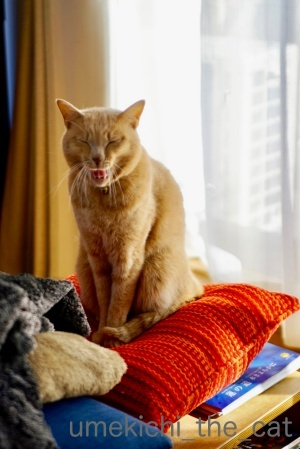
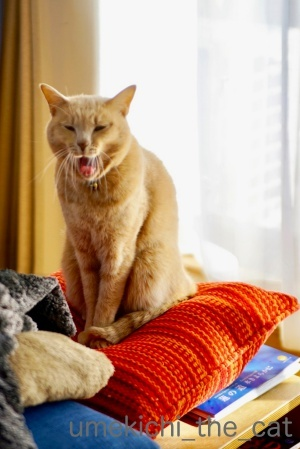
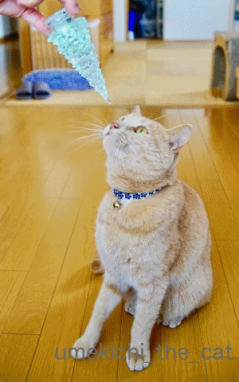
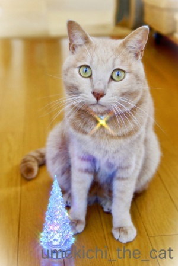

休暇中と年末の風景〜今年もお世話になりました〜 [梅吉]
クリスマスの連休中は特に何をするわけでもなく過ごしました。

梅吉さんものんびり＾＾
お掃除途中のクッションの上に乗るのはもはやお約束。
この日は「かわいそうなわし」ではなく「陽だまりを満喫するわし」。
この場所はエアコンの温風が当たる場所でもあります。
梅吉賢いなぁ〜（笑）




すっかり気持ちが良くなって大欠伸です。

今年は梅吉が我が家に来てから初めてクリスマスグッズを飾りました！
初めて見せた時はツリーにかじりついてきたので即撤収。
今年はそれぞれが時々倒れていたくらいでひどいイタズラはされませんでした(≧▽≦)
梅吉も大人になりました・・・

ぴかぴかするツリーですよー。

こういう所は変わりませんけど(^_^;)
年末頃に恒例にしていた梅吉のフォトブック。
今年は梅吉の誕生日頃（4月）に作ろうかなぁと思っています。
2015年と2016年は頑張って年末に作業していたのですが昨年あたりから頑張れずw
年が明けてのんびりしてから作業する方が良いな、と切り替えました。
出来上がったらブログ記事にしますねー。
さて、今年も一年拙ブログにたくさんのnice !やコメント本当にありがとうございましたm(_ _)m
代わり映えのしない梅吉の記事ばかりですがお付き合いいただいて本当に感謝です！
コスプレ（被り物・巻き物）などは「ようやるわ・・・」の方もいらっしゃるかと思いますが
幸か不幸か梅吉はコスプレイヤーとしてなかなか素質があるようですので（親ばか）
来年もどんどんコスプレしちゃいます＾＾
どうぞよろしくお付き合いくださいませ(^_－)☆
それでは、新しい年が皆様にとって光溢れる明るい年となりますよう願いを込めて
梅吉からささやかですが「光」をお送りしますね＾＾

本年はこれでブログ納めと致します。
年明けの更新は、う〜ん・・・ぼちぼち始めたいと思いますw
皆様、良いお年をー
連休中に植物園に行ってきました。
早いもので早春（？）の植物たちが花開き始めていましたよ。
スイセン

ボケ
ソシンロウバイ
台風や塩害の影響で枝ぶりが悪くなっていましたがけなげに咲くお花。
美しいですね・・・
以前記事にした我が家のプランター栽培の芽キャベツ。
ただいまこんな感じです。
衝撃のビジュアルでお見せしたかったのですが迫力に欠けますw
芽キャベツ一個一個の大きさが枝豆くらい・・・
これ以上大きくならないかも。
プランター栽培の難しい所です (-_-メ)
芽キャベツは大きく育つとこんな感じに実るんです。
ちょっときゃ〜ってなる見てくれですよね！
こういう集合体、
苦手な方もいらっしゃるかもしれないので念の為【閲覧注意】です ( ´艸｀)
2018-12-27 00:00
nice!(72)
コメント(40)

カフェオレ色の梅吉

梅吉 2023年8月10日 永眠


梅吉と出会った譲渡会

犬猫の理由なき殺処分ゼロ
妄想広告
UMEKICHI 光

爆発的に早い！
時々攻撃的！
Thanks to Mr.Boss365
爆発的に早い！
時々攻撃的！
Thanks to Mr.Boss365

「陽だまりを満喫するわし」、まったりしててとっても
いい感じです♡＾＾
あくび顔、サイコー(≧▽≦)
カフェオレ色の梅吉さんからの金色に輝く光☆
ご利益ありそうです！ヤッター＼(^_^)／～
今年も一年間、ありがとうございました＾＾
また来年も、梅吉さんを楽しみにしています♪
ちぃさんも、よいお年を(*´ω｀*)
by マーヤ (2018-12-27 00:26)
気持ち良くて大欠伸いいニャ～
ワンコやニャンコはコスプレさせてる人も多いけど、人間のコスプレはソネブロじゃ見かけないね？
じゃぁ私が挑戦してみようかな？（ﾟ□ﾟ）
それでは、良いお年を。
by 英ちゃん (2018-12-27 02:59)
梅吉さんのあくびの後の笑顔に癒されます。ぴかーもありがとう。綺麗なお花と可愛い芽キャベツ、そして衝撃のリンク写真と盛りだくさんで楽しませていただきました。また来年も宜しく。よいお年を。
by zombiekong (2018-12-27 03:08)
我が家でも昔はツリーを飾ってました。
でも、金ピカの飾りが１日ごとに少なくなっていくし
暴走して倒されたので封印しました（爆）
by ぽちの輔 (2018-12-27 06:41)
大あくびの梅吉さん♪
とても気持ち良さそうです(*´ω｀*)
今年も梅吉さんをいっぱい堪能させて
いただきました♪
また来年もよろしくお願いします！
良い年末年始をお迎えくださいね♪
by きぃ (2018-12-27 07:45)
梅吉さんの「光」有難く頂戴します。
今年も訪問ありがとうございました。
よいお年をお迎えください。
by yhiga-siura (2018-12-27 08:10)
梅吉さん、日向ぼっこしながらエアコンの温風も確保なんて
素敵な場所見つけてますねぇ( ^ω^ )
お猫様はどうしてこうやって部屋の中で
一番快適な場所を見つけるのが上手なんだろう(⌒-⌒; )
今年も可愛い梅吉さん、イケメンな梅吉さん
そしてコスプレに変顔の梅吉さんと
たくさんの梅吉さんの魅力を見せていただきありがとうございました(_ _)
来年もどうぞよろしくお願いいたします♪( ´▽｀)
笑顔いっぱいの良い年末年始をお迎えくださいね=(^.^)=
by ニッキー (2018-12-27 08:14)
梅吉さん、(´Д｀)欠伸至福の時ですにゃあ^^
by ニコニコファイト (2018-12-27 08:57)
「陽だまりを満喫するわし」(笑
クッションでおくつろぎの梅吉さん福を招いていそうです。
コスプレの素質があるって素晴らしいことです。
ガンガンやっちゃってくださいませ(^^
うちのタルちゃんも、かぶり芸＆乗せ芸は得意だったのに
最近は年のせいか？時々怒ります。寂しいことです(笑
毎年フォトブックを作成しているのですね。楽しみにしています。
今年もあとわずかですが楽しい記事をたくさんありがとうございました。
また来年もよろしくお願いします。
よいお年を～♪
by marimo (2018-12-27 11:06)
梅吉さん、大きなお口で欠伸ですね！
今年の更新は次回の更新で年内は終了にしようと思っています。
来年もよろしくお願いします。
良いお年をお迎えくださいm(__)m
by ma2ma2 (2018-12-27 11:57)
こんにちは。
コメントありがとうございました。
梅吉君！！クッションの上で百面相？最後の顔、癒されます！！
「梅吉のフォトブック」良いですね！！本屋で売りませんか？
小生も休暇中、ブログ製本を考えていましたが、レイアウトが気に入らないので断念。
こまめな？ちぃさんを見習いたいです。
コスプレ！！ドンドンやりましょう。来年も楽しみにしてます！！
「仏の光より梅吉君の光」です。「光」頂きました。
寒波襲来ですが、良い年末年始をお迎えください！？(=^･ｪ･^=)
by Boss365 (2018-12-27 12:06)
え～？！ 梅吉さん、もう大人になっちゃったの？？？？？
きらきらステキなクリスマスグッズが羨ましすぎ♪
我が家のリースとサンタは、今年も玄関の外でした^^;
お掃除中ちゃんとおざぶに乗ってくれるなんて梅吉さん賢い！
床に寝そべって鼻先を掃除機がかすめても絶対に動かないウチのとエライ違いです(-_-;)
いつまで悪ガキのままなんやろう・・・嬉しいような、悲しいような。
楽しい記事＆お写真をありがとうございました。
来年もコスプレ期待しています(^_-)-☆
ではでは、よいお年をお迎えください。
by ゆきち (2018-12-27 12:47)
大欠伸、めちゃリラックスしてていい感じ。
ラストの光輝く写真も素敵です(≧∀≦)
この一年、お疲れ様でした。
楽しい写真の数々に癒されましたよー。
私は今日から帰省して、忘年会三昧です(^_^;)
どうぞ良いお年をお迎えください！
by よーちゃん (2018-12-27 14:03)
間違いなく梅吉くんはコスプレイヤーの素質がありますよ♪
来年もいろいろ楽しみにしてます。
我が家はダメそうだからｗｗ
あくびの顔良いなあ〜
こういう顔をニマニマしながら眺めるのが
一番幸せよね^^
ちぃさんのご家族にとって2019年も素敵な一年になりますように。
良いお年をお迎え下さい！！
by リュカ (2018-12-27 18:33)
今年は梅吉さんに癒やされて幸せでした。
猫さんのあくびって本当にリラックスしてるんだな～って感じます。
来年も梅吉さんの記事、楽しみにしていますよ～！
by kou (2018-12-27 19:29)
一年、梅吉さんのコスプレや動画を楽しく拝見しました
ソシンロウバイが綺麗に咲いていましたね
良いお年を～
by 花好き人 (2018-12-27 21:49)
大あくびの梅吉さんの写真を見て
つられて欠伸してしまいました。^^;
えー、ソシンロウバイの花がもう！？早すぎるー！！
来年も梅吉さんの記事を楽しみにしてます。
今年一年ありがとうございました。
どうぞよいお年を！！
by yes_hama (2018-12-27 22:00)
いつも元気を頂きありがとうございます。
お正月、ゆっくりお過ごしくださいね。
私も、休むことに専念します＾＾
by riverwalk (2018-12-27 22:41)
平穏にポカポカおひるね、幸せのひとときですね（*´∀｀*）
芽キャベツガ！！（笑）
これ、収穫どきがむずかしいですね^^;
すくすく育ちますよう。
本年もありがとうございました。
ご家族みなさま、健やかによい新年をお迎えくださいませ。
by Ja-Kou66 (2018-12-28 01:19)
梅吉さんの大あくびと「フッ…。」と笑っているみたいな不敵な微笑みがイイですねぇ＾＾。今年一年、楽しませていただきました。来年もどうぞよろしくお願いいたします、良いお年を。
by きーちゃん2 (2018-12-28 10:26)
梅吉さん、オレンジのクッション、似合いますね～。
陽だまりを満喫するわし＾＾
癒やされます～＾＾
コスプレイヤーぶり、来年も期待してます＾＾
by sana (2018-12-28 15:45)
イタズラしない大人になった・・・ちょっと寂しいわ(;O;)そう言えばおない年のナノもそうかも(^_^;)
よいお年をお迎えください！！また来年(^O^)／
by palpal (2018-12-28 17:01)
「・・わし」「・・わし」わしがツボです（笑）
オレンジのクッションにカフェオレ色の梅吉さんが合ってます。
梅吉さんのあくび見て、つられあくび、
もう一度見て、またあくび。
あくびを繰り返しています（笑）
梅吉さんの被り物、好きです。
真剣な顔をして写真に収まるところが良いです。
そして、梅吉さんからの光、確かに頂きました。
私の中も光が輝いてます。
芽キャベツ、形は同じようですよ（笑）頑張れですね。
梅吉さん家、良いお年をお迎えください。
皆さんの幸せを願ってます。
by kiki (2018-12-28 20:46)
今年はいろんな記事で沢山楽しませて戴き有り難う御座いました。
来年も宜しくお願い致します。m(_ _)m。佳いお年をお迎え下さい♡。
by 旅爺さん (2018-12-29 08:17)
ちぃさん
こんにちは
よいお年をお迎えください
来年もよろしくお願いします
by kiyokiyo (2018-12-29 13:57)
オレンジ色が良くお似合いの梅吉しゃま…
今年は災害などなど落ち着かない日々をお過ごしだったちぃさん、年末年始ゆっくりお過ごしくださいませね。
ちぃさん、梅吉さんにお邪魔してお会い出来たのが何より嬉しかったくつしたにゃんです☆
次回お会いするのを楽しみに、新年も変わらずよろしくお願い致します！
by くつしたにゃん (2018-12-29 14:53)
クリスマス休暇。家族でのんびり過ごせて良かったですね。
可愛らしい大あくび(≧▽≦)
家もタラが落ち着いたらツリーを出したいと思っています。
夫に言ったら、いつになることか・・・ってｗ確かに・・・。
梅吉くんからの「ぴかー」しっかりと受け取りましたよ！
新しい年の光となりますね。
今年も１年ありがとうございました。
よいお年をお迎えください(*^-^*)来年もよろしくお願いします♪
by emi (2018-12-30 00:36)
今年も梅吉さんの楽しい記事をありがとうございました。
来年もよろしくお願いいたします。
どうぞ良いお年をお迎えください。
by てんてん (2018-12-30 10:38)
こんにちは。
Suchmos！！小生もジェミロクワイ？似ていると感じていました。
動いているSuchmosを確認していませが、NHKライブだと音質が落ちそうな感じです。
紅白より、実家で格闘技？観ている可能性が高いです。
今年一年大変お世話になりました。来年もよろしくお願いいたします。
良いお年をお迎え下さい！？(=^･ｪ･^=
by Boss365 (2018-12-30 12:17)
マーヤさん＞
梅吉からの金色の光、金運アップがあると良いなぁと
飼い主もご利益を期待しております＾＾
今年も一年お付き合いありがとうございましたm(_ _)m
来年もあかりちゃんの可愛いお姿楽しみにしております！
時々登場のあかりコラもね(^_－)☆
良いお年をお迎えくださいませ=´ᆺ`=
英ちゃんさん＞
おお！
英ちゃんさんのコスプレはやっぱり鉄道系コスプレでしょうか( ´艸｀)
ぜひぜひ期待しております(^_－)☆
良いお年をお迎えくださいませ=´ᆺ`=
zombiekongさん＞
あくび後の顔って独特ですよねw
私も写真を見てふふってなってます＾＾
芽キャベツはインパクトある画像ですよね！
初めて見た時は軽くサブイボでした (^_^;)
今年もスットコランドに参加できて嬉しかったですよー！
来年もどうぞよろしくお願いします。
良いお年をお迎えくださいませ=´ᆺ`=
ぽちの輔さん＞
日ごと少なくなる飾り物・・・それは困りますね！
どこかに入り込んで見つからないことも多そうですw
ツリー登りはにゃんこにとっては楽しそうですけどねー。
後片付けする方は困っちゃいますよねwww
来年もよろしくお付き合いくださいね！
きぃさん＞
わんこの話題は皆無なのに
今年もお付き合いいただいてありがとうございました＾＾
来年もたくさん梅吉を楽しんでいただけるように頑張りますね！
Leaちゃんケンさんケンさん実家の皆様と
楽しい年末年始をお過ごしくださいね=´ᆺ`=
yhiga-siuraさん＞
「光」届いたのですね！うれしいです＾＾
みなにゃんと皆様を明るく照らす光でありますように！
どうぞ良いお年をお迎えくださいませ=´ᆺ`=
ニッキーさん＞
梅吉のいる場所に手をかざすと暖かい空気か流れていますw
暖かい空気が目で見えるのでしょうか(^_^;)
にゃんこって不思議ですね！
今年も梅吉の日常にお付き合いくださってありがとうございましたm(_ _)m
来年も代わり映えしない日常と思われますが
どうそよろしくお願い致します(^_－)☆
一段と寒くなってきたので４ニャンさんのうち誰かが
ニッキーさんのお布団に来てくれることを願っております！
どうぞ良いお年をお迎えくださいませ=´ᆺ`=
ニコニコファイトさん＞
梅吉のあくびを見ていると釣られちゃうんですよ！
それも至福の時間です＾＾
来年もよろしくー！
marimoさん＞
おおお！タルさんはかぶり芸＆乗せ芸の大先輩でいらしたのですね。
わかりました。
いつまでもできると思うなにゃんこのかぶり芸、ですね(｀_´)ゞ
まだ訳も分からず受け入れているうちに
どんどん着せます、乗せます、かぶせます ( ´艸｀)
フォトブックはただいま構想中です♪
2018年バージョンはどうなることやらですw
どうぞ良いお年をお迎えくださいませ=´ᆺ`=
ma2ma2さん＞
いつ見ても飲み込まれそうな大欠伸ですw
こんな気持ち良さそうな欠伸も家猫の特権でしょうかw
年末年始はお怪我などされませんよう
どうぞ良いお年をお迎えくださいませ=´ᆺ`=
Boss365さん＞
あくびの時は変顔の宝庫ですよね！
連写で撮ると思わぬ表情が拾えて写真を見るのが楽しみです＾＾
今回はあくびの後の「あむっ！」とした顔が写っていて満足でーす♪
Boss365さんが製本に取り組むとクオリティの高いものになりそう！
フォトブックメーカーのテンプレートだと妥協が必要ですw
それもしょうがないなぁ・・・と思いつつ記念に作っていますよー。
Suchmos＝（似ている）ジャミロクワイやっぱりそう感じますよね＾＾
我が家は紅白の時間は居眠りタイムかなぁ(⌒_⌒;
ゆく年くる年あたりにモソモソと起きて
（おっとと）年末年始の挨拶をすることになりそうです( ´艸｀)
来年も梅吉にお付き合いくださいねー！
どうぞ良いお年をお迎えくださいませ=´ᆺ`=
ゆきちさん＞
そうなんです！最近いたずらがグンと減りました（梅吉比ですがw）
クリスマスツリーに変わってお正月の飾り物も無事であります＾＾
こてつくんは永遠の少年ですけれど
梅吉はおっさん猫の道をまっしぐらかもしれませんwww
あんなに手のつけられないやんちゃ坊主がこんなにマイルドになるのねーと
感慨深い2018年の年の瀬でございます。
今年も梅吉にお付き合いいただいてありがとうございました！
来年は家にいるのに恐怖を感じるなんて災害のない年になると良いですね。
どうぞ良いお年をお迎えくださいませ=´ᆺ`=
よーちゃん＞
おお！帰省中なのですね＾＾
奈良もたっぷり寒そうです。
風邪などひかれませんよう忘年会をお楽しみくださいませ！
どうぞ良いお年をお迎えくださいませ=´ᆺ`=
来年もよろしくです＾＾
リュカさん＞
あおくんは何もしなくても絵になる男だから＾＾
うみちゃんはへそ天うみフライの大技をお持ちだし！
こちらこそ来年も２ニャンさんの日常と
美術館、歴史史跡の旅楽しみにしております。
来年もよろしくねー！！
どうぞ良いお年をお迎えくださいませ=´ᆺ`=
by ちぃ (2018-12-30 15:41)
kouさん＞
こんなにおっきいあくびが出るのはリラックスしてる証拠ですよね( ´艸｀)
外猫さんも半外猫さんも大きなあくびができる日常でありますように、
と願うこの頃です＾＾
来年も梅吉は大活躍しますよ(^_－)☆
ご期待くださいませ！
花好き人さん＞
梅吉の日常のあれこれを楽しんでいただいて嬉しいです♪
来年もぜひ見にいらしてくださいね＾＾
植物園では寒い中、梅の蕾が大きく膨らんでいて
まんさくも蕾が膨らみかけていました。
春が楽しみですねー！
どうぞ良いお年をお迎えくださいませ=´ᆺ`=
yes_hamaさん＞
私もつられて大欠伸ですw
梅吉とどっちが大きな口かしら( ´艸｀)
咲き始めのソシンロウバイはひときわ良い香りでした♪
梅の蕾も大きく膨らんでいましたよー。
マンサクはもう少し頑張れって感じでした＾＾
今年も一年梅吉にお付き合いありがとうございましたm(_ _)m
どうぞ良いお年をお迎えくださいませ=´ᆺ`=
riverwalkさん＞
お正月おたがいにのんびり過ごしたいですね！
篠島付近の穏やかな風景の写真を眺めてのんびりしようかしら＾＾
どうぞ良いお年をお迎えくださいませ=´ᆺ`=
Ja-Kou66さん＞
芽キャベツ( ´艸｀)
ピンポン球くらいになるよね！と毎日ガン見しております。
大きくなる？大きくなる？と食べどきを逃して
鑑賞して終わってしまいそうな予感も・・・
今年も梅吉にお付き合いいただいてありがとうございましたm(_ _)m
どうぞ良いお年をお迎えくださいませ=´ᆺ`=
きーちゃん２さん＞
あくびの後って面白い顔するんですよねー( ´艸｀)
もちろんあくび中も変顔で最高なんですが。
梅吉を楽しんでいただいてありがとうございます！
来年も見にいらしてくださいねー。
どうぞ良いお年をお迎えくださいませ=´ᆺ`=
sanaさん＞
同系色、ぴったりマッチでしょうか＾＾
梅吉を見ていると前向きで明るいオレンジがぴったりと思って
フォトブックの表紙もオレンジにしています。
クッションは梅吉より先輩さんなので
梅吉がオレンジのクッションに導かれて我が家にやってきた！？ ( ´艸｀)
今年も梅吉にお付き合いいただいてありがとうございました。
どうぞ良いお年をお迎えくださいませ=´ᆺ`=
palpalさん＞
ナノくんも落ち着いてきちゃいましたかw
こてつくんはまだまだやんちゃ盛りということなので
３歳くらいは永遠の少年とおっさん猫との分かれ道かしら？(*>艸<)
もしそうなったらおっさん猫あるある話しましょうねー！
来年もよろしくね！
どうぞ良いお年をお迎えくださいませ=´ᆺ`=
kikiさん＞
前向きで活発な梅吉を見ていると「オレンジだなぁ」って思うのですが
本ニャンもそう思っているのかオレンジクッションはお気に入りです＾＾
梅吉のコスプレ楽しんでいただいて嬉しいです！
来年はどんなコスプレになるのか私も楽しみですよー。
梅吉の光届きましたか＾＾
こころに一つ、灯していただけるといいなぁ・・・
今年も梅吉にお付き合いいただきましてありがとうございます！
来年も引き続きお付き合いくださいね＾＾
仲良し家族の皆さん３人でどうぞ良いお年をお迎えくださいませ=´ᆺ`=
by ちぃ (2018-12-30 16:10)
1年間楽しませていただきました♪
良いお年をお迎え下さい。
by 市丸 (2018-12-30 23:10)
今年もお世話になりました。
良いお年を＾＾
by ぽちの輔 (2018-12-31 06:53)
改めまして
今年は、お世話になりましてありがとうございました。
来年も、よろしくお願い致します。
良いお年をお迎え下さい。
by 英ちゃん (2018-12-31 11:10)
旅爺さん＞
こちらこそ！梅吉を見にきていただいてありがとうございましたm(_ _)m
どうぞ良いお年をお迎えくださいませ=´ᆺ`=
kiyokiyoさん＞
コメントありがとうございます！
いつも梅吉を見にきていただいてありがとうございました！！
どうぞ良いお年をお迎えくださいませ=´ᆺ`=
くつしたにゃんさん＞
オレンジは梅吉のテーマカラー、「わしの色」でーす(≧▽≦)
今年は災害の多い大阪でしたね！
大雨の予報が東の山の方に出ると
「くつした姐さんちは大丈夫かしら・・・」と思ったものです。
来年はくつした姐さんにお目にかかれるかしら＾＾
どうぞ良いお年をお迎えくださいませ=´ᆺ`=
emiさん＞
emiさんちもツリーは封印されているのですね( ´艸｀)
うちはミニミニツリーだけど
大きいものだったら梅吉が駆け上っていまだに出せずにいたと思いますw
梅吉のぴかー、タラくんくるみちゃんはもちろんだけど
ひなちゃん、まりもくんにも届くといいな。
元気すぎる梅吉のパワーを注入w
みなにゃん＆わん＆みなさまでどうぞ良いお年を迎え下さいませ=´ᆺ`=
てんてんさん＞
梅吉を見にていただいてありがとうございましたm(_ _)m
どうぞ良いお年をお迎えくださいませ=´ᆺ`=
市丸さん＞
梅吉を見にきていただいてありがとうございましたm(_ _)m
来年は災害の無い一年を過ごしたいでものすね・・・
どうぞ良いお年をお迎えくださいませ=´ᆺ`=
ぽちの輔さん＞
梅吉にお付き合いいただいてありがとうございましたm(_ _)m
どうぞ良いお年をお迎えくださいませ=´ᆺ`=
英ちゃんさん＞
鉄道コスプレに負けないように頑張りまーすw
改めての丁寧なご挨拶ありがとうございますm(_ _)m
来年も梅吉をよろしくお願い致します。
by ちぃ (2018-12-31 13:26)
一年間有難うございます、来年も宜しくお願い致します
良いお年をお迎えください
by 粋田化石 (2018-12-31 20:40)
今年も素敵な色遣いのブログにセンスをピカピカ感じてましたっ♪
誕生日のお祝いコメント、ありがとうでした！！
子供の頃からの誕生日＆クリスマスいっしょ問題・・。（笑）
今度、コメント返信できるまでお待ちくだされ～♪
よいお年をっ！！
by yuppie (2018-12-31 22:42)
明けましておめでとうございます。
今年は素晴らしい一年でありますように。
本年も宜しくお願い致します。
by 旅爺さん (2019-01-01 09:30)
輝かしい新年をお迎えのこととお慶び申し上げます。
本年も何卒よろしくお願い申し上げます。
by yam (2019-01-01 12:48)
粋田化石さん＞
ご挨拶が遅くなりましたm(_ _)m
旧年中はお世話になりました。
今年も梅吉をどうぞよろしくお願い致します！
yuppieさん＞
ご挨拶が遅くなってしまいましたm(_ _)m
今年もどうぞよろしくお願い致します＾＾
コメント返信楽しみにしていますねー！
旅爺さん＞
明けましておめでとうございますm(_ _)m
当地は穏やかな新春となりましたが
旅爺さん地域はいかがでしょうか。
本年もどうぞよろしくお願い致します。
yamさん＞
明けましておめでとうございますm(_ _)m
お天気ともに穏やかな新春を迎えることができました＾＾
本年もどうぞよろしくお願い致します。
by ちぃ (2019-01-01 15:33)